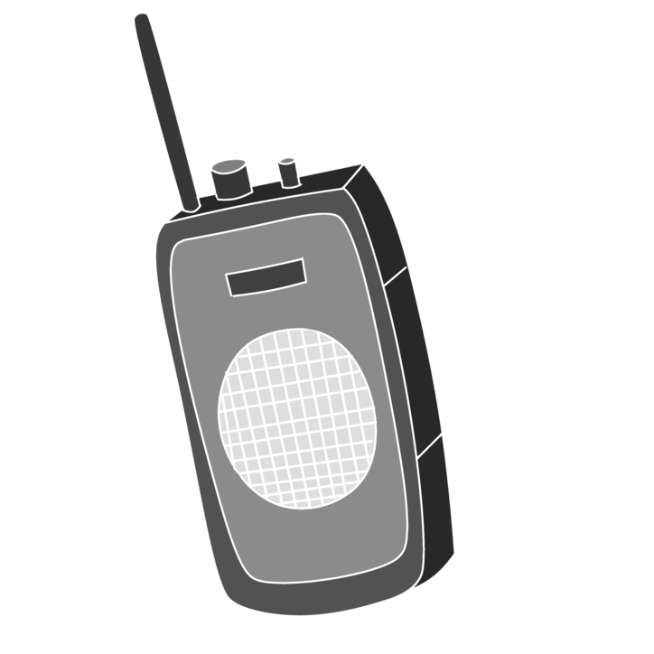

4. 无线广播¶
掌控板提供2.4G的无线射频通讯,共 13 Channel。可实现一定区域内的简易组网通讯。在相同通道下,成员可接收广播消息。就类似,对讲机一样。在相同频道下,实现通话。

{kind=link}
对讲机
4.1. radio¶
你可以用两块掌控板上传该程序,在REPL下,发送和接收广播消息¶
1 2 3 4 5 6 7 8 9 10 11 12 13 14 15 16 17 18 | import radio
import _thread
channel=2
radio.on()
radio.config(channel=channel) # radio通道设置
def rec_loop(): # radio接收循环
while True:
temp=radio.receive(True) # radio 接收数据,返回(msg,mac)
# temp=radio.receive() # radio 接收数据,返回msg
if temp: # 当接收到数据时打印
print(temp)
_thread.start_new_thread(rec_loop, ()) # radio接收线程
radio.send("hello mPython!")
|
首先我们需要 import radio ,导入无线模块。然后 radio.on() ,开启无线功能。配置无线通道 radio.config(channel) ,channel参数可设置1~13个通道。
使用 radio.send() 发送广播消息,消息类型为字符串。接收端,在相同channel,使用 radio.receive() 来接收广播数据。 receive(True) 返回数据类型为(msg,mac)。
mac为网络设备的MAC地址,地址均唯一。如,想做单播应用,可过滤其他MAC设备发送的消息。默认下 receive() ,返回的数据类型为msg,是不带MAC地址的。
4.2. 电报机¶
基于上面的radio学习,我们可以用掌控板制作个有趣的电报机！两个掌控板之间通过无线电和摩斯密码传播,是不是有谍战片的既视感咧！赶紧尝试下吧！
{kind=link}
电报机示例¶
1 2 3 4 5 6 7 8 9 10 11 12 13 14 15 16 17 18 19 20 21 22 23 24 25 26 27 28 29 30 31 32 33 34 35 36 37 38 39 40 41 42 43 44 45 46 47 48 49 50 51 52 53 54 55 56 57 58 59 60 61 62 63 64 65 | import radio # 导入radio
from mpython import * # 导入mpython
import music # 导入music
CH = 1 # channel变量
radio.on()
radio.config(channel=CH) # radio通道设置
btna_stat, btnb_stat, touch_stat = [0] * 3 # 按键状态标志
def set_channel(): # radio 通道设置函数
global CH, btna_stat, btnb_stat
if button_a.value() == 0 and btna_stat == 0: # a按键,减通道
CH -= 1
if CH < 1:
CH = 13
radio.config(channel=CH) # radio通道设置
oled.DispChar("Channel: %02d" % CH, 25, 5) # 通道显示
oled.show()
btna_stat = 1
elif button_a.value() == 1:
btna_stat = 0
if button_b.value() == 0 and btnb_stat == 0: # b按键,加通道
CH += 1
if CH > 13:
CH = 1
radio.config(channel=CH) # radio通道设置
oled.DispChar("Channel: %02d" % CH, 25, 5) # 通道显示
oled.show()
btnb_stat = 1
elif button_b.value() == 1:
btnb_stat = 0
def ding(): # 叮叮响
global touch_stat
if touchPad_T.read() < 300 and touch_stat == 0: # 检测按键按下时,发出‘ding’响,并广播
music.pitch(500, 100, wait=False) # 播放"ding"
radio.send('ding') # radio 广播 "ding"
touch_stat = 1
elif touchPad_T.read() >= 300:
touch_stat = 0
oled.DispChar("Channel: %d" % CH, 25, 5) # 开机显示
oled.DispChar("电报机:触摸T", 25, 25)
oled.show()
while True:
set_channel() # 设置通道函数
ding() # 叮叮响函数
temp = radio.receive() # radio接收广播
if temp == 'ding': # 当接收到"ding"广播,发出叮响
rgb.fill((0, 10, 0)) # 指示灯
rgb.write()
music.pitch(500, 100, wait=False)
sleep_ms(50)
rgb.fill((0, 0, 0))
rgb.write()
|
上述电报机示例,ab按键选择无线通道,触摸T,发送电报。当接收到电报,掌控板的RGB会有指示。